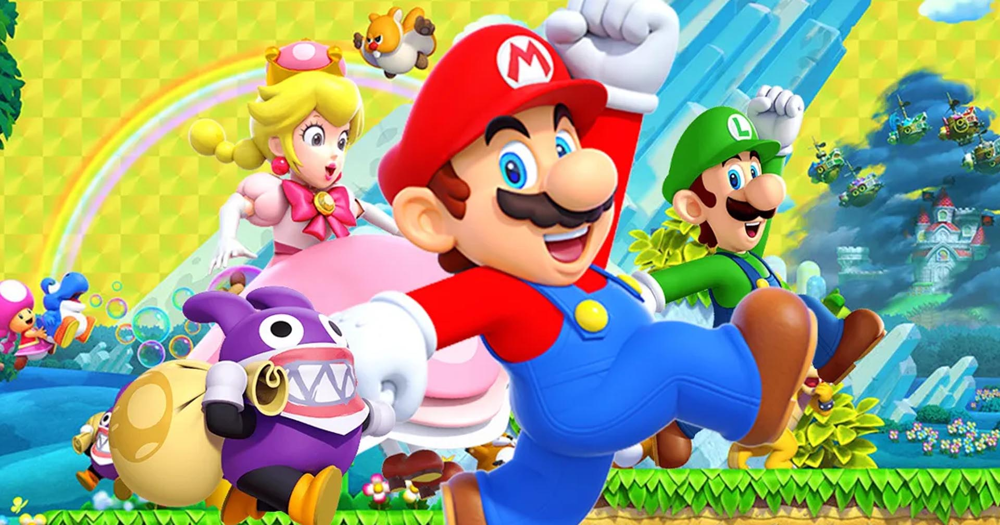

Tudo aquilo que você sempre quis saber sobre o mundo Gamer, em um único lugar!
HISTÓRIA DO SUPER MÁRIO
Provavelmente todo mundo conhece e já jogou a história de Mario Bros, o famoso encanador que tenta salvar a namorada Pauline do gorila Donkey Kong. O que alguns podem não saber é que, no princípio, Mario nem mesmo era o personagem principal do jogo. Ele era conhecido com Jumpman e o jogo era só do Donkey Kong, Mario era só um participante. Toda essa história teve início em 1980.
E na intenção de deixar o personagem o mais próximo possível com um humano, Mario Bros ganhou o seu conhecidíssimo bigode. Primeiramente, Mario era carpinteiro. Entretanto, por passear dentro de canos em seu jogo, ele começou a ser visto como um encanador. Com o passar do tempo e com o sucesso do jogo, Mario Bros foi ganhando mais destaque. Ele ganhou o irmão Luigi, sua história se tornou mais elaborada e com objetivos, além de ter seus vilões mais trabalhados. Sem falar, é claro, os novos poderes fornecidos a ele a seus amigos.
A origem do Mário Bros
Como dito anteriormente, Mario Bros surgiu pela primeira vez no jogo de Donkey Kong, seu nome era Jumpman. Entretanto, algumas pessoas começaram a ver várias semelhanças entre o personagem e um funcionário da Nintendo, seu nome era Mario Segali. Foi aí que decidiram batizar o Jumpman de Mario. Esse nome já começou a ser usado no jogo de sequência do gorila – Donkey Kong Jr.

Alguns detalhes do personagem foram criados para disfarçar a qualidade dos gráficos. Em primeiro lugar, Mario usa a boina porque os gráficos em 8-bit não permitiam que ele tivesse um cabelo bem-feito. Apesar de ter sido criada apenas como uma fuga das limitações, atualmente a boina é um dos maiores ícones dos videogames. Em segundo lugar, seu nariz é grande para se destacar no pequeno personagem. E por fim, Miyamoto, designer de Mario, colocou um grande bigode no personagem para esconder a boca que ele não tem. O problema é que, por ser tão pequeno, ela também não teria um bom desenho.
O "Pai" do Mário
Shigeru Miyamoto (宮本 茂 Miyamoto Shigeru?, Sonobe, 16 de novembro de 1952) é um designer e produtor de jogos eletrônicos japonês, conhecido por ser o criador de algumas das mais bem-sucedidas séries de jogos eletrônicos de todos os tempos, incluindo as séries Super Mario, Donkey Kong, The Legend of Zelda, Star Fox, F-Zero e Pikmin. Ele é amplamente conhecido como um dos designers mais talentosos e influentes da história da indústria de videogames.
Nascido em Sonobe, Japão, Miyamoto formou-se na Faculdade Municipal de Artes Industriais de Kanazawa. Ele originalmente procurou uma carreira como artista de mangás, até desenvolver um interesse em videogames. Com a ajuda de seu pai, ele entrou para a Nintendo em 1977 depois de chamar a atenção do presidente Hiroshi Yamauchi com seus brinquedos. Ele ajudou a criar arte para o jogo de arcade Sheriff, e mais tarde foi contratado para projetar um novo jogo de arcade, Donkey Kong.
Curiosidades
Antes de ter seu primeiro jogo com seu nome, Mario foi a estrela de um outro jogo: Wrecking Crew. Em resumo, seu trabalho era destruir locais e chegar a um objetivo. Luigi participava do jogo também, sendo o segundo jogador. Wrecking Crew foi criado para o Nintendinho 8-bits. Apesar de manter o visual marcante da boina e o macacão vermelho, Mario aparece um pouco diferente no jogo. Além disso, ele usa um martelo como auxílio para destruir as paredes no seu caminho.
Então é isso! Espero que você tenha gostado do nosso artigo com essa curiosidade sobre o Mario Bros e o seu mundo.